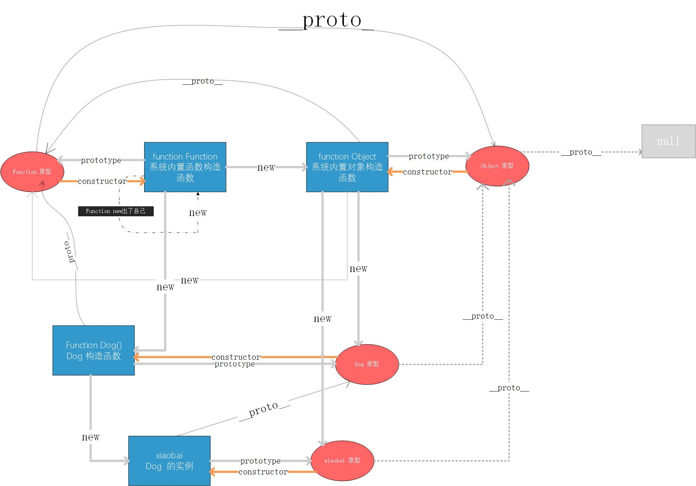

# js原型链根源探索
### 1. js中两条线的根源
>* 构造函数 : 构造函数的根源是function Function(系统内置的函数的构造函数)
>* 原型链条继承 : 原型链的继承最终追溯到Object的原型上, Object的原型的__proto__ 指向了null. 即原型链的继承可以追溯到null;
### 1. js初始
1. js中先创造了 function Function (function的构造函数);
2. Function new出了自己(实际并没有,为了方便理解所以才这样考虑.), 也new出了Object(对象的构造函数).
3. Object的构造函数(function Object) 系统中的对象都由它来创建; 系统中所有对象的 __proto__ 最终都指向了 Object的prototype(原型);
4. Object.prototype.__proto__ 指向了null;
5. 系统中的其他__proto__, prototype, constructor 的指向都可以由此推出来.
6. Function 构造函数,创建出了所有的基本类型的构造函数, Array, Number,String,Boolen等
<img src="images/chatu/prototype1.jpg" alt="" />
